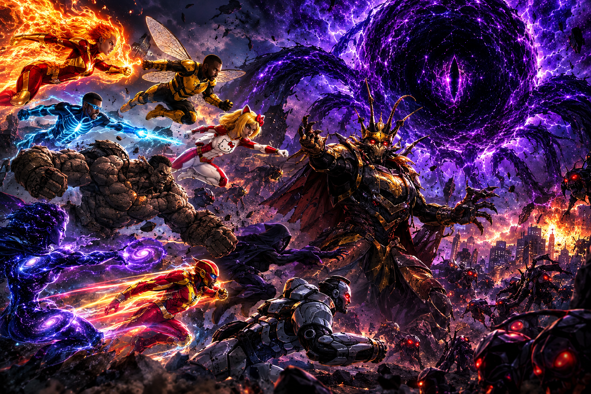

Os heróis de Nova Aurora
Conheça os heróis que defenderam Nova Aurora durante o ataque.

O ataque do Rei Barata reuniu alguns dos maiores heróis conhecidos de Nova Aurora.
Cada um possui habilidades completamente diferentes. E, pela primeira vez, todos precisaram lutar lado a lado.
🔥 Fênix Solar
Uma das heroínas mais poderosas da cidade.
Fênix Solar consegue manipular energia térmica e transformar seu corpo em uma espécie de chama viva.
Durante a batalha, ela destruiu dezenas de máquinas do exército do Rei Barata.
Mas seu poder parece ter uma ligação estranha com O Vazio. Quando a entidade apareceu, as chamas da heroína ficaram roxas por alguns segundos. Até agora ninguém sabe explicar o motivo.
⚡ Raio-X
Especialista em velocidade e energia.
Raio-X consegue enxergar através de materiais sólidos e detectar fontes de energia escondidas.
Foi ele quem descobriu que algumas das máquinas do Rei Barata estavam recebendo comandos externos.
Por causa disso, ele pode ter encontrado a primeira pista sobre quem está realmente controlando o conflito.
💪 Titã
Força bruta do grupo.
Titã é praticamente impossível de derrubar e conseguiu enfrentar sozinho uma das maiores criaturas robóticas da invasão.
Apesar de sua aparência intimidadora, é considerado um dos heróis mais protetores da equipe.
🌠 Cosmos
O especialista em fenômenos espaciais.
Cosmos foi o primeiro herói a perceber que O Vazio não parecia estar localizado exatamente no céu.
Segundo sua análise, parte da entidade estaria existindo em outra dimensão.
Isso significa que atacar O Vazio diretamente pode ser impossível.
🏎️ Turbo
O herói mais rápido de Nova Aurora.
Turbo foi responsável por evacuar centenas de pessoas durante o ataque.
Seu maior feito aconteceu quando conseguiu atravessar uma região destruída da cidade em poucos segundos para impedir que uma explosão atingisse civis.
🌑 Sombra
Pouco se sabe sobre sua verdadeira identidade.
Sombra consegue desaparecer completamente em ambientes escuros e se movimentar sem ser detectado.
Durante a batalha, foi visto investigando uma área isolada onde alguns robôs pareciam estar recebendo ordens.
Ele desapareceu antes que os outros heróis pudessem descobrir o que encontrou.
🤖 Mega-Bot
O membro tecnológico da equipe.
Mega-Bot possui sistemas capazes de analisar máquinas, energia e sinais desconhecidos.
Foi ele quem recuperou a mensagem:
"O PRIMEIRO JÁ DESPERTOU."
Agora, Mega-Bot está tentando descobrir quem enviou a mensagem.
🐝 Homem-Abelha
O herói mais imprevisível da equipe.
Homem-Abelha utiliza um traje tecnológico equipado com asas artificiais, sensores e mecanismos capazes de aumentar sua velocidade e agilidade.
Apesar de seu comportamento brincalhão e de estar sempre fazendo piadas durante as missões, ele é um combatente extremamente habilidoso.
Durante o ataque do Rei Barata, Homem-Abelha enfrentou diversas criaturas robóticas e ajudou a proteger os moradores de Nova Aurora.
Sua parceria com Super Hello Kitty é uma das mais curiosas da equipe, principalmente porque os dois vivem discutindo durante as missões.
🎀 Super Hello Kitty
Uma das heroínas mais poderosas e determinadas de Nova Aurora.
Super Hello Kitty combina força, agilidade e habilidades de combate com seu traje especial inspirado em sua identidade.
Ela consegue enfrentar inimigos muito maiores que ela e possui grande resistência durante batalhas prolongadas.
Durante o ataque, Super Hello Kitty foi fundamental para impedir que as criaturas do Rei Barata avançassem sobre as áreas mais populosas da cidade.
Ao lado do Homem-Abelha, ela formou uma dupla extremamente eficiente, embora as constantes provocações entre os dois tornem suas missões ainda mais caóticas.
🌌 A equipe de Nova Aurora
Juntos, Fênix Solar, Raio-X, Titã, Cosmos, Turbo, Sombra, Mega-Bot, Homem-Abelha e Super Hello Kitty representam uma das maiores equipes de heróis já reunidas em Nova Aurora.
Porém, com o surgimento de O Vazio, esses heróis precisarão descobrir se suas habilidades serão suficientes para enfrentar uma ameaça que parece estar além da própria realidade.
E uma pergunta continua sem resposta: quem será o próximo a despertar?